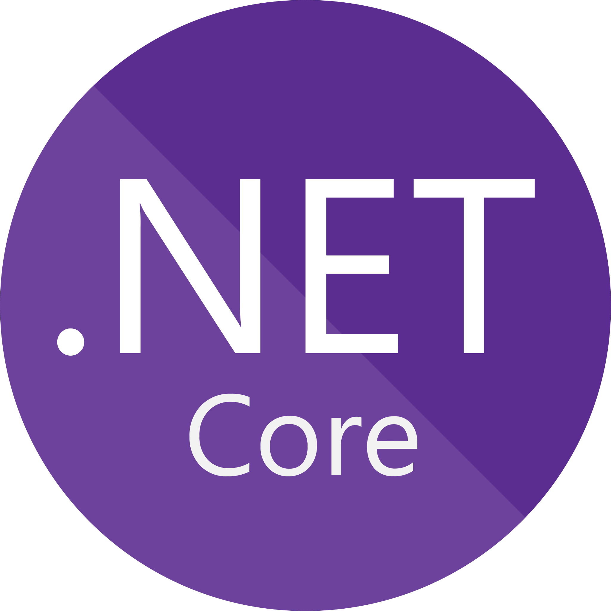
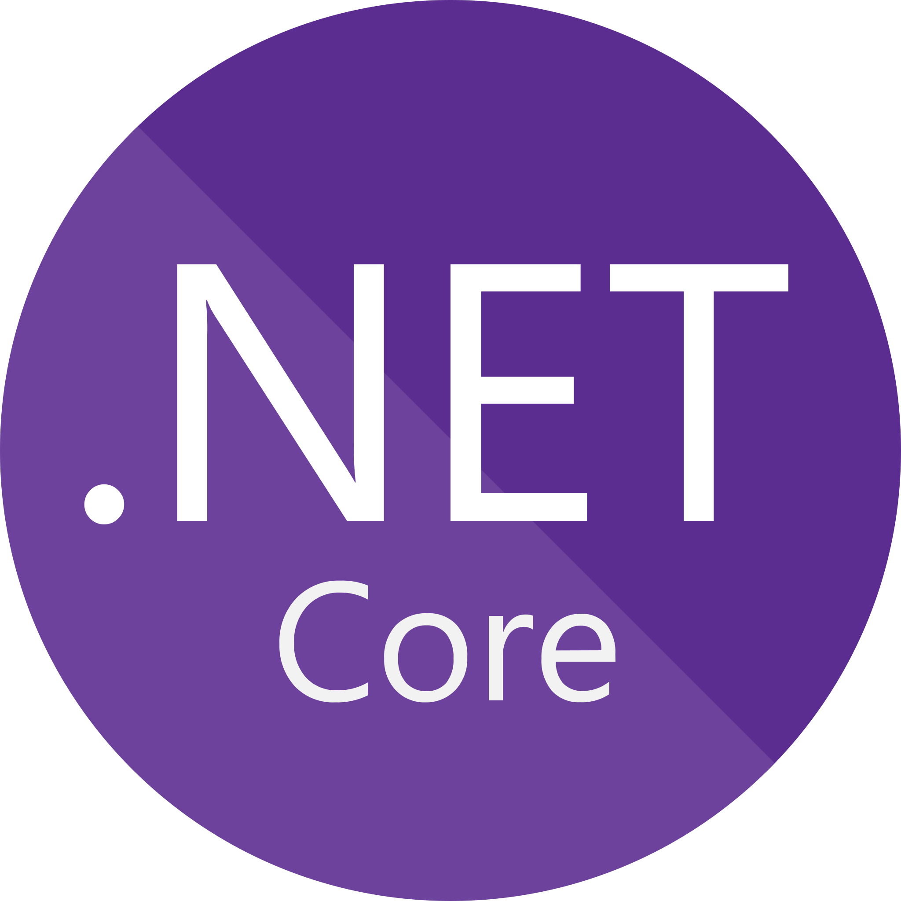
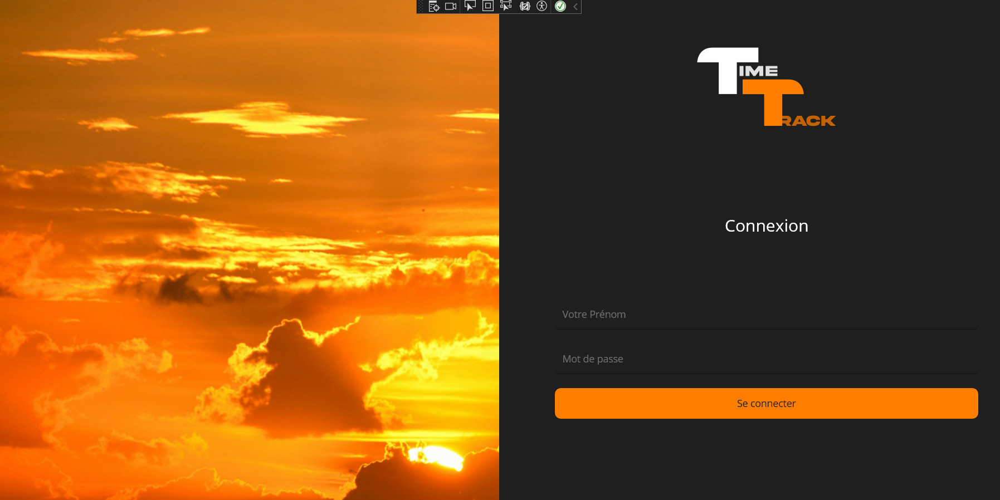
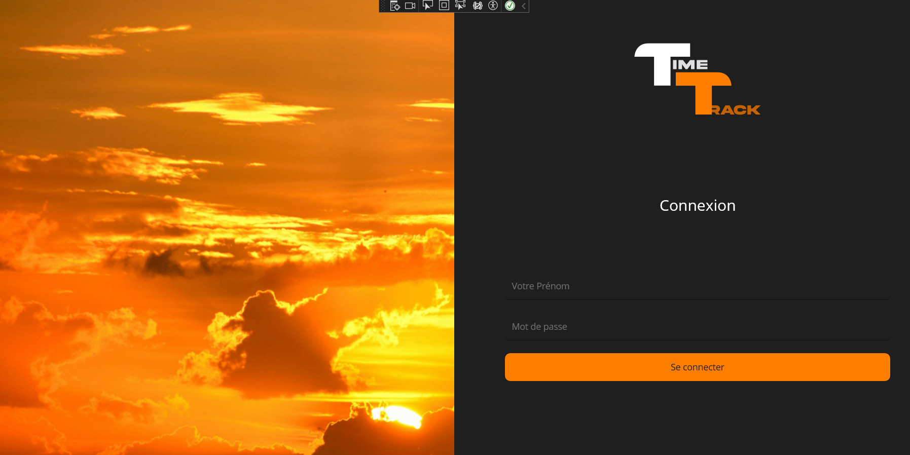

Conclusion
Le projet TimeTrack offre une approche innovante pour le suivi du temps, en apportant précision et efficacité dans la gestion des heures de travail. Grâce à son interface utilisateur intuitive et ses fonctionnalités robustes, TimeTrack facilite le suivi et l'analyse du temps de travail, permettant ainsi une meilleure gestion des ressources humaines.
Ce que j'ai appris :
- Utilisation de GitHub pour la gestion du versioning et la collaboration en équipe.
- Développement et optimisation de procédures stockées SQL pour la gestion des données.
- Importance des tests et de la validation pour garantir la fiabilité des fonctionnalités développées.


 


 
